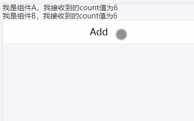
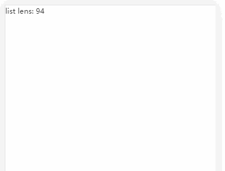

react系列-1-hooks
前言
React 16.8 新增了hooks特性，这是一项激动人心的功能，可以让你在不编写 class 的情况下使用 state 以及其他的 React 特性。
React的组件创建方式，一种是类组件，一种是纯函数组件，并且React团队希望，组件不要变成复杂的容器，最好只是数据流的管道。开发者根据需要，组合管道即可。也就是说组件的最佳写法应该是函数，而不是类。
但目前开发中我们基本都在使用类组件开发，因为纯函数组件有类组件不具备的多种特点，如：
- 纯函数组件没有状态
- 纯函数组件没有生命周期
- 纯函数组件没有this
我们使用类组件实现一个简答的计时器功能：
import React, {Component} from 'react';
class AddCount extends Component {
constructor(props){
super(props)
this.state={
count: 0
}
}
addcount = () => {
this.setState({
count:this.state.count + 1
})
}
render(){
return (
<>
<p>{this.state.count}</p>
<button rimary" onClick={this.addcount}>Add</button>
</>
)
}
}
export default AddCount
可以看到，一个小功能，但看起来却非常“重”，对于类组件，无论业务代码多少，constructor、render等都是必须的。
类组件功能齐全却很重，纯函数很轻便却有上文几点重大限制，为了解决上述问题。React团队设计了React Hooks。
什么是React Hooks
hooks,顾名思义，就是“钩子”的意思，因为函数组件没有状态，所以对于一个全功能的组件，，如果需要外部功能和副作用，就用钩子把外部代码”钩”进来。而React Hooks 就是我们所说的“钩子”。更进一步说，React Hooks就是加强版的函数组件。
我们先将上述类组件改为函数组件：
import React, {useState } from 'react';
const AddCount = () => {
const [count, setCount] = useState(0);
const addcount = () => {
let newCount = count
setCount(newCount+=1)
}
return (
<div>
<p>Count: {count}</p>
<button onClick={addcount}>Add</button>
</div>
);
};
export default AddCount;
可以看到函数组件 + React Hooks的写法更简洁：没有了渲染逻辑，没有了生命周期等。
下面介绍React Hooks的四种默认钩子：
React Hooks的钩子
userState():状态钩子
纯函数组件没有状态，useState()用于为函数组件引入状态
在useState()中，它接受状态的初始值作为参数，即上例中计数的初始值，它返回一个数组：
数组第一项是一个变量，指向状态的当前值。类似this.state
数组第二项是一个函数，用来更新状态,类似setState
useContext():共享状态钩子
依旧从上面例子进行扩展，假设组件A与组件B共享状态:
import React, {useContext,createContext, useState } from 'react';
import { Button } from 'antd-mobile';
const Count=()=>{
const [count,setCount]=useState(0);
const AppContext =createContext({})
const A=()=>{
const { val } = useContext(AppContext)
return(
<p>我是组件A，我接收到的count值为{val}</p>
)
}
const B=()=>{
const { val } = useContext(AppContext)
return(
<p>我是组件A，我接收到的count值为{val}</p>
)
}
return (
<AppContext.Provider value={{val: count}}>
<A></A>
<B></B>
<Button onClick={()=>{setCount(count+1)}}>Add</Button>
</AppContext.Provider>
);
}
export default Count;
运行结果：

useReducer():Action钩子
因为react本身并不提供状态管理的功能，所以一般是通过外部库来解决，最常用到的就是redux。
redux 的核心概念是，组件发出 action 与状态管理器通信。状态管理器收到 action 以后，使用 Reducer 函数算出新的状态，
Reducer函数的形式是(state, action) => newstate。
useReducers()钩子用来引入 Reducer 功能
const [state, dispatch] = useReducer(reducer, initialState)
Reducer 函数和状态的初始值作为参数，返回一个数组:
数组的第一项是状态的当前值
数组的第一项是发送 action 的dispatch函数
我们依旧实现一个计数器：
import React, {useReducer} from 'react';
const AddCount = () => {
const reducer=(state,action)=>{
if(action.type==="add"){
return {
...state,
count:state.count+1
}
}else{
return state
}
}
const addcount=()=>{
dispatch({
type:"add"
})
}
const [state, dispatch] = useReducer(reducer, {count:0})
return(
<div>
<p>Count: {state.count}</p>
<button onClick={addcount}>Add</button>
</div>
)
}
export default AddCount
由于 Hooks 可以提供共享状态和 Reducer 函数，所以它在这些方面可以取代 Redux。但是，它没法提供中间件（middleware）和时间旅行（time travel），如果你需要这两个功能，还是要用 Redux。
useEffect():副作用钩子
useEffect()用来引入具有副作用的操作，最常见的就是向服务器请求数据。以前，放在componentDidMount里面的代码，现在可以放在useEffect()。
import React, {useEffect,useState} from 'react';
const GetList = () => {
const [loading, setLoading] = useState(true);
const [count, setCount] = useState(0);
useEffect(() => {
setLoading(true);
fetch(`https://xxx.xxx.com/InterfaceApi/News/noticeList`)
.then(response => response.json())
.then(data => {
setCount(data.data.count);
setLoading(false);
});
}, [])
if (loading === true) {
return <p>Loading ...</p>
}
return(
<div>
<p>list lens: {count}</p>
</div>
)
}
export default GetList
运行结果：

创建自己的Hooks
react提供给我们了四种默认React Hooks,有时候我们需要创建自己想要的Hooks,来满足更便捷的开发，其实无非就是根据业务场景对以上四种Hooks进行组装，从而得到满足自己需求的钩子，此处不再展开。